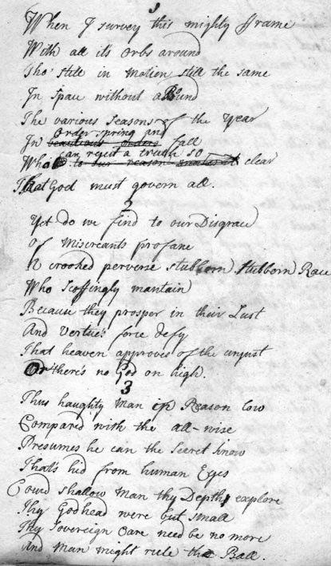

The Holy Ode
L'Ode Sainte
by the "Poet Chief" Alexander Struan Robertson (1668 - 1749)
or/and (?) by William Meston (1683 - 1745)
Tune - Mélodie
"Llangloffan" 76,76,D by D.Evans, 1865
from "www.cyberhymnal.org"
|
To the tune:
This piece has the characteristic structure of the poems in the Metrical Psalters and is very likely designed to be sung to one of the many standard tunes accompanying them (here "Llangoffan" 76,76,D by D.Evans, 1865). To the lyrics: There is a double ascription of authorship of this poem: The anonymous "True Loyalist, or Chevalier's Favourite" , page 59, published in 1779 includes this hymn by the title "Struan Robertson's Holy Ode" . The "Clan Donnachaidh (=Robertson) Annual" quotes an article from “Scotland and Scotsmen in the Eighteenth Century’ by John Murray of Ochtertyre (published in Edinburgh and London, in 1888), to the effect that "Cruelly as [ Chief Struan Robertson 's] memory was treated in publishing, after his death, pieces that were either unfinished or unworthy of him, his ‘Holy Ode’ and ‘Farewell to Mount Alexander’, bespeak an elevated, well attuned mind, capable in happier circumstances, of having soared still higher. Considering the mean company he kept for more than twenty years [!?], and the strange life he led, the wonder is how he could exert his mental powers to such good purpose as he did...." The text is illustrated by a photograph of the poem in Robertson's handwriting. The conclusion of this author who has evidently no Jacobite sympathy is: "Yet Strowan was unquestionably a man of mark in Scottish literary society, and a personal friend of most of the poets of his day, especially of the Jacobite [William] Meston. Now, precisely the latter is considered the author of this poem in "The Poetical Works of the Ingenious and learned William Meston (1688 - 1745) , sometime professor of philosophy in the Marischal College of Aberdeen", 7th edition, published in Aberdeen in 1802. It includes the same poem, titled "A Holy Ode from Mount Alexander" [= Dun Alastair House, the principal residence of the Struan chiefs, at the foot of Shiehallion], page 139, among other "Jodocus Grim's Poems". Robert Southey, the author of "Specimens of the Later English Poets" in 3 Volumes (London, 1807), page 73, quotes this only poem for the Author William Meston. He write: "He died just before the last and final defeat of the Jacobites. His poems have often been printed in Scotland . They will now perish with the family of the Stuarts" . Maybe both poets had a hand in this "Holy Ode, wherein, in a pious strain, [the poet] acknowledges the all-ruling Providence of God, [and...] from a consideration of this, speaks comfort to James and his exiled family, that the usurper cannot continue in his precarious position, but must give way to the true king." (The Rev. John Sinclair, the Parish Minister of Kinloch Rannoch, Perthshire, in "Schiehallion", 1905). Struan Robertson died in his own house of Carie, in Rannoch, April 18, 1749, in his 81st year without lawful issue. A volume of his poems was published after his death. He is said to have formed the prototype of the Baron of Bradwardine in Sir Walter Scott's novel "Waverley". |
 The poem "Holy Ode" in Struan Robertson's handwriting Mount Alexander House |
A propos de la mélodie:
Ce texte a la structure caractéristique des poèmes des Psautiers métriques et doit certainement se chanter sur l'un des airs qui les accompagnent d'ordinaire (ici "Llangoffan" 76, 76, D du Gallois D.Evans, 1865. A propos du texte Cet hymne est attribué à deux auteurs différents: L'ouvrage anonyme "Le Vrai Loyaliste" , publié en 1779 et où ce morceau figure page 59, l'intitule " Ode sainte de Struan Robertson ". L'"Annuaire du Clan Donnachaidh (=Robertson)" cite un article tiré de 'L'Ecosse et les Ecossais au XVIIIème siècle’ de John Murray d' Ochtertyre (paru à Edimbourg et Londres, en 1888), où l'on apprend que: "Même si l'on outragea la mémoire [du Chef Struan Robertson ] en publiant, après sa mort, des pièces restées au stade de l'ébauche et indignes de lui, son "Ode sainte" et son "Adieu à Dunalastair", témoignent d'une élévation d'esprit qui, dans des circonstances plus fastes, auraient pu le conduire vers des sommets. Si l'on tient compte de l'entourage médiocre qui fut le sien pendant plus de vingt ans [!?] et du dérèglement de son existence, on s'étonne qu'il ait su consacrer son talent à de telles oeuvres..." Le texte est illustré par une photo d'un manuscrit de la main de Robertson. Lq conclusion de cet auteur, dénué de toute sympathie Jacobite, est la suivante: "Cependant, il est indéniable que Strowan occupa sa place dans le monde littéraire écossais et qu'il fut l'ami de presque tous les poètes de l'époque, à commencer par le Jacobite [William] Meston. Or, c'est précisément à ce dernier qu'est attribué la paternité de l'Ode par "Les œuvres poétiques de l'ingénieux et érudit William Meston (1688 - 1745) , jadis professeur de philosophie au Marischal College d'Aberdeen", 7ème édition, parue à Aberdeen en 1802. Elle figure dans cet ouvrage sous le titre "Ode sainte du Mont Alexandre" (=Dunalastair House, la principale résidence des chefs du clan Struan, au pied du mont Schiehallion], à la page 139, au chapitre "Poèmes de Jocodus Grim". Robert Southey, l'auteur de "Florilège de poètes anglais récents" en 3 volumes (Londres 1807) cite cet unique poème, page 73, pour l'auteur William Meston. Il ajoute: "Il mourut juste avant la défaite finale des Jacobites. Ses poèmes ont souvent été publiés en Ecosse. Ils périront tout comme a péri la race des Stuarts. Peut-être l'un et l'autre ont-ils contribué à cette " Ode sainte, où, dans un accès de piété, [le poète] rend hommage à la Divine Providence [et...] encourage Jacques et de sa famille en exil à considérer que l'Usurpateur ne pourra éternellement maintenir sa position précaire et devra céder la place au souverain légitime." (Le Révérend John Sinclair, curé de Kinloch, Rannoch, Perthshire, dans "Schiehallion", 1905). Struan Robertson mourut chez lui à Carie en Rannoch, le 18 avril 1749, âgé de 81 ans, sans descendance légitime. Un recueil de ses poèmes fut publié après son décès. On affirme qu'il servit de modèle à Walter Scott pour le Baron de Bradwardine du roman "Waverley". |

|
Struan Robertson's Holy Ode
1. When I survey this mighty frame With all its orbs around, still in motion, still the same. In space without a bound; The various seasons of the year In beauteous orders all, Which to our reason makes it clear That a God must govern all. 2. Yet do we see to our disgrace. Of miscreants profane, A stubborn, perverse, crooked race. That impiously maintain. Because they prosper in their lust, And virtue's force defy, That heav'ns approves of the unjust, Or there's no God on high. 3. Should shallow men, in reason low Compare to Thee, always! Presume he does the secrets know That are hid from human eyes. Could shallow men Thy deeps explore, The Godhead were but small; Thy heav'nly care needs be no more, And man may rule the ball. 4. But O! Thy providential spring Surpasses all human ken. That looks to the minutest thing That moves, as well as men. Permitting or commanding still. In each Thy pow'r exprest, And all perform their good or ill, As suits Thy glory best. 5. Why then should trials of mankind, Which Thou on them bestows, Exalt a subluniary mind, Or yet depress it low: The wicked Thou permitt'st to reign And bloom but for a while, The righteous do drag their chain 'Till heav'n think fit to smile. 6. O sacred J[ame]s, let not thy lot, Though seemingly severe, Make thee suspect thy cause forgot, Thy crosses nobly bear; He Who thy heart has in His hand Trust thou His holy skill; He hath the people at command. And turns them at His will. 7. But thou, who sit'st upon the th[ron]e Of St[uar]t's ancient race, Aband'ning thy rightful own To fill another's place; A crown's but a precarious thing, Thy fate thou dost not see; They who betray'd their native K[in]g Will ne'er prove true to thee. 8. Now, O eternal source of love! Extend Thy gracious hand, And hasten justice from above, To this unhappy land. O let our panting hearts have peace, And innocence restore, Then shall our senates act with grace, Offending thee no more. Source: "The True Loyalist; or, Chevaliers's Favourite: being a collection of elegant songs, never before printed. Also several other loyal compositions, wrote by eminent hands" (page 59). Printed in the year 1779. |
The Holy Ode from Mount Alexander
1. When we survey this mighty frame With all its orbs around, still in motion, still the same. In space without a bound; The various seasons of the year In beauteous order fall, Which makes it to our reason clear That God must govern all. 2. Yet do we find to our disgrace. Of miscreants profane, A crooked, perverse, stubborn race. Who scoffingly maintain. Because tkey prosper in their lust, And virtue's force defy, That heaven approves of the unjust, Or there's no God on high. 3. Thus haughty man, in reason low Compared with Thee, All-wise ! Presumes he can the secret know That's hid from human eyes. Could shallow man Thy depth explore, Thy Godhead were but small; Thy sovereign care needs be no more, And man might rule the ball. 4. But oh! Thy providential spring Is past all human ken. And flows to the minutest thing That moves, as well as men. Permitting or commanding still. In each Thy power's expressed, And all perform their good or ill, As fits Thy glory best. 5. Why then should trials of mankind, Which Thou dost here bestow, Exalt a sublunary mind, Or yet depress it low : The wicked Thou permitt'st to reign And bloom but for a while, The righteous only drag their chain Till heaven thinks fit to smile. 6. Then sacred James, let not thy lot, Though seemingly severe, Make thee suspect thy cause forgot, Thy crosses nobly bear ; He who thy heart has in His hand (Trust thou His holy skill) Has, too, the people's at command. And turns them at His will. 7. But thou who sit'st upon the throne Of Stuart's ancient race, Abandoning thy rightful own To fill another's place ; A crown's but a precarious thing, Thy fate thou dost not see. They who betrayed their native king Will ne'er prove true to thee. 8. Great, eternal source of love ! Extend Thy gracious hand. And hasten justice from above To this unhappy land. O let our panting hearts have peace, And innocence restore, Then shall Thy sacred law take place And faction rule no more. Source: "The Poetical Works of the Ingenious and learned William Meston (1688 - 1745), sometime professor of philosophy in the Marischal College of Aberdeen", 7th edition, published in Aberdeen in 1802. |
L'Ode sainte de Struan Robertson
1. Je vois, cerné d'orbites, L'univers imposant, Espace sans limites, Fixe autant que mouvant: Ces beautés qui se suivent, Ce retour des saisons, Qu'un Dieu seul y préside S'impose à la raison. 2. Il t'est intolérable, Profane mécréant, Qu'aient une assise stable, Les pervers, les méchants. Ils défient la droiture, Prospérent dans le mal. N'es-Tu qu'une imposture, Dieu du Ciel déloyal? 3. Face à Ton omniscience, La fragile raison Prétend, quelle arrogance! Explorer les tréfonds. Ton insondable abysse, Accessible aux humains, Que l'homme le régisse! A quoi bon tous Tes soins? 4. Mais que sait-donc l'humaine Science de Tes ressorts? L'infime est leur domaine; Ils gouvernent nos sorts. Pour admettre ou préscrire Ta volonté prévaut: Le meilleur et le pire Glorifient le Très-Haut 5. Notre esprit sublunaire C'est pour mieux l'exalter Que Dieu se veut sévère, Ou pour le rabaisser. Lui qui permet que règne Le mal rien qu'un instant, Il brisera les chaînes Du juste au bon moment. 6. Si ton sort est austère, O Jacques, notre roi, Supporte ton calvaire Et en ta cause aie foi! Conserve ta confiance Au Maître de ton cœur! Aux hommes Il dispense Les heurs et les malheurs. 7. L'usurpateur qui siège Sur le trône des Stuart Lors d'un troc sacrilège Fuit ses propres devoirs. Sa couronne est précaire: Qu'il se méfie de ceux Qui trahirent naguère! Il périra par eux 8. Etends Ta main propice, Eternel Dieu d'amour! Vers nous de Ta justice Hâte enfin le retour! Rends la paix, l'innocence Aux cœurs qui crient vers Toi: Que cessent les offenses De ceux qui font nos lois! (Trad. Christian Souchon (c) 2011) |